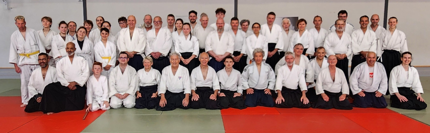

Naissance du club
Vincent, Cédric et Hervé ouvrent le premier cours à Mignovillard, sur le Plateau de Nozeroy.
À propos du club
Depuis 2018, l'Aïkido Club de Mignovillard transmet l'aïkido dans un esprit d'entraide et de simplicité. Voici notre histoire, nos valeurs et notre façon d'enseigner.

Notre histoire
Depuis 2018, l'aïkido se pratique sur le Plateau de Nozeroy, une étape après l'autre.
2018
Vincent, Cédric et Hervé ouvrent le premier cours à Mignovillard, sur le Plateau de Nozeroy.
—
Le club rejoint la Fédération d'Aïkido Traditionnelle, une des premières fédérations françaises, avec des passages de grade reconnus.
—
Ouverture du créneau dès 12 ans, pour permettre à toute la famille de pratiquer sur le même tatami.
Auj.
Aujourd'hui, le dojo accueille chaque semaine débutants, ados et adultes dans une ambiance bienveillante et engagée.
Vision & valeurs du club
Faire vivre un art exigeant en le rendant accessible à toutes et tous, sans le trahir.
Un tatami où l'on se respecte, où l'erreur fait partie du chemin de chacun.
Le goût du travail bien fait et de l'effort partagé, jamais l'esprit de compétition.
Approche pédagogique
Notre enseignement privilégie la sécurité, le ressenti et la régularité — pas la performance immédiate.
On apprend à chuter (ukemi) avant tout le reste, pour pratiquer sereinement.
Chaque pratiquant avance selon son propre rythme, sans pression.
Le geste juste se construit par la pratique et l'écoute, pas par la force.
On progresse ensemble, en s'entraidant, jamais l'un contre l'autre.
La vie du dojo
Entraînements réguliers, passages de grade et moments partagés rythment la vie du club tout au long de l'année.
Deux séances par semaine, toute l'année, à la salle des sports de Mignovillard.
Une progression jalonnée, reconnue par la FAT, sans esprit de compétition.
Des stages ponctuels permettent de pratiquer avec d'autres clubs du Jura.
Affiliations & cadre
Le club est affilié à la Fédération d'Aïkido Traditionnelle (FAT), une des premières fédérations françaises. Nos enseignants sont diplômés — brevetés fédéraux pour deux d'entre eux — et les grades sont reconnus au niveau national.
Rejoignez-nous
Venez assister à un cours ou réserver une première séance d'essai — sans aucun engagement.